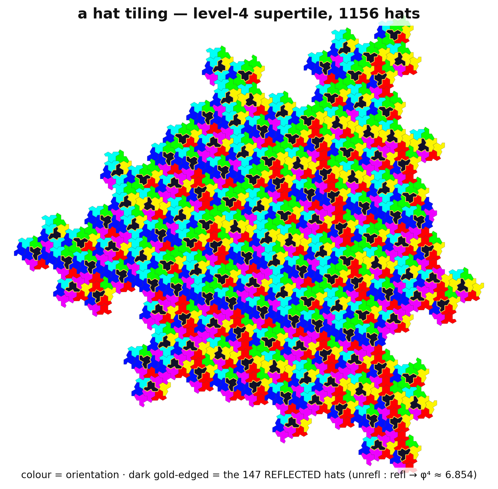
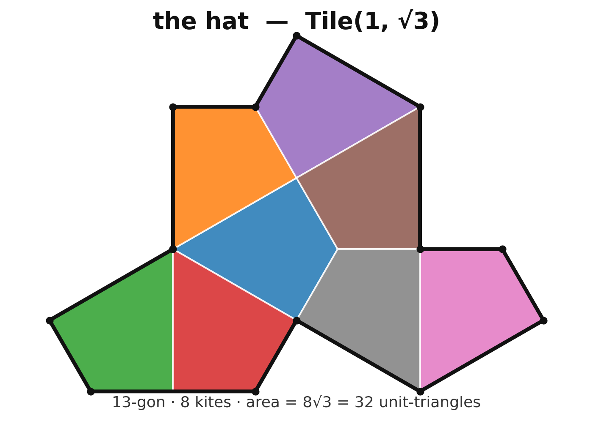
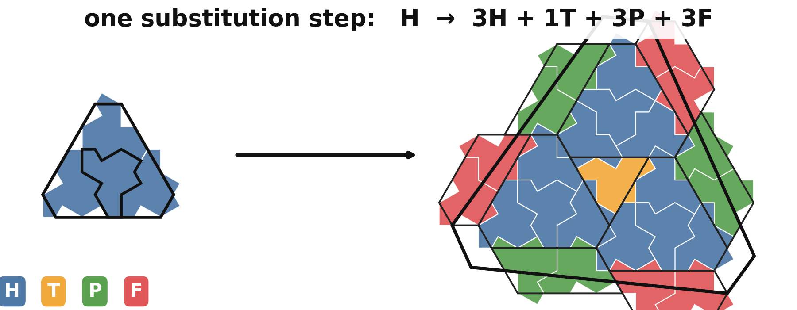

The hat: one tile, no repeats
For sixty years one question stayed open: is there a single shape that tiles the whole plane — but never in a repeating pattern? In 2023 a retired print technician found one. It is called the hat. Here you can build its tiling by hand, watch a golden ratio fall out of the bookkeeping, and see exactly which claims we re-computed and which we take on the authors' word.
1The sixty-year question
Tile a floor with squares and the pattern repeats: slide it over by one tile and it lands on itself. That sliding symmetry is periodicity. Most tilings have it. A few special sets of tiles do not: the first such aperiodic sets appeared in the 1960s (using thousands of distinct tile types), and by the mid-1970s the celebrated Penrose tiles (1974; published 1978) managed it with just two shapes — a pattern that never repeats, no matter how far you walk.
That raised the obvious question, nicknamed the einstein problem — a pun on the German ein Stein, "one stone." Could a single tile do it alone? No matching rules, no decorations, no colors — just one honest shape, used in flips and turns, that admits tilings of the plane and yet forces every one of them to be non-periodic. For decades nobody knew. The candidates either needed a second tile, or cheated with markings, or weren't a single connected region.
In November 2022 David Smith, a hobbyist in Yorkshire, was cutting shapes out of card and noticed that one 13-sided polygon kept tiling outward without ever settling into a repeat. He wrote to the computer scientist Craig Kaplan; together with Joseph Samuel Myers and Chaim Goodman-Strauss they proved it. The shape — "the hat" — is the first true aperiodic monotile. Below is a finite chunk of the tiling it makes.

code/monotile/figures.py.2Meet the hat
The hat is a 13-sided non-convex polygon. Overlay the matching kite grid — the deltoidal trihexagonal tiling — and it falls into 8 congruent kites; that is the cleanest way to pin down its exact geometry. Its edges come in just two lengths, 1 and √3 (one length-1 edge is doubled, giving the lone length-2 side), which names it Tile(1, √3) in the authors' family of shapes.
We checked that area two independent ways — the shoelace formula on the 13 corners, and the sum of the 8 kite areas — and confirmed the 8 kites glue back to the 13-gon with zero leftover. A small but common trap: the hat is not Tile(1,1). Tile(1,1) is the equilateral cousin and is the base of a different shape, the spectre (§6).

3Grow a tiling yourself
How do you tile an infinite plane with one weird shape and guarantee it never repeats? You don't place tiles one by one — you use a substitution rule. Group the hats into four standard clusters — H (4 hats), T (1), P (2), F (2) — then a recipe replaces every cluster with a larger arrangement of the same four. Repeat, and the patch inflates by a fixed factor each step — about 2.6× in each linear dimension (φ2; its area by φ4 ≈ 6.854, derived in §4) — growing toward a tiling of the whole plane. Pick a seed cluster and a level, and watch it inflate.
Every tile is the same hat, only rotated, translated, or (rarely) flipped. The reflected tiles — the hat's mirror image — appear only inside H clusters, one apiece. As the level grows, the ratio of plain to mirrored tiles drifts toward φ4 ≈ 6.854 (the golden ratio to the fourth power); §4 explains why. Higher levels draw thousands of tiles in one pass — give level 6 a moment.
4Where φ4 comes from
The substitution rule, written out, is pure bookkeeping — how many of each cluster each cluster becomes:
Stack those four columns into a 4×4 substitution matrix M and one application of the rule is just multiplying a count-vector by M. The long-run behavior is governed by M's largest eigenvalue. Its characteristic polynomial factors cleanly:
So areas inflate by exactly φ4 each step (lengths by φ2). The matching eigenvector gives the limiting fractions of each cluster — the proportions you'd find in an infinite tiling:
Because exactly one reflected hat sits in each H cluster, the unreflected-to-reflected ratio tends to φ4 : 1 as well. We computed this polynomial, its roots, and the eigenvector two independent ways (exact symbolic algebra and floating-point) and they agree. You can also check the matrix against the actual drawn geometry right here — the button tallies the live patch above and compares it to M raised to the right power, in exact integer arithmetic:
Tallies the patch currently shown in §3 and compares it to the integer matrix prediction.
A nice fall-out, verified for the first five levels of the H seed: the total tile counts are 4, 25, 169, 1156, 7921 — the squares of every other Fibonacci number (2², 5², 13², 34², 89²). We state this as an observed pattern, not a theorem we proved.

5Is it really a tiling?
A picture can hide a sliver of a gap or a hair of an overlap. So we don't trust the picture — we put every patch on an exact integer lattice (doubling the scale lands every corner on a grid point, giving each hat the exact integer area 32) and check, with no floating-point rounding:
- No overlaps. Every little lattice edge inside the patch belongs to a unique tile-boundary
direction, and all 8×N kite cells are distinct. Two independent integer tests; an
optional floating-point cross-check (
shapely, when installed) reports zero overlap area. - No gaps. Every interior edge is shared by exactly two tiles, the outer boundary is one simple loop with no holes, and the enclosed area equals 32·N exactly.
- Every tile is the hat. All N tiles match the canonical hat by a reflection-aware edge-and-angle signature, and every placement is a rigid motion (no stretching).
- The ratio converges. Unreflected : reflected over levels 2–6 reads 7.333, 6.682, 6.864, 6.850, 6.854 — oscillating toward φ4 = 6.85410, exactly as the eigenvalues predict.
All of this runs as verify.py (27 core assertions on numpy + sympy, plus
6 optional shapely cross-checks) on a 1156-hat patch and an
independent 112-hat patch, and the in-browser engine that drew §3 is checked tile-for-tile against
the Python — same counts and same tile centers to six decimals, for all four seeds across levels 1–5
— by test_core.mjs (105 assertions). Both gates are green.
6What's proven, what we checked, what's open
We verified the tiling — we did not re-prove aperiodicity
Our code proves the substitution produces valid, gap- and overlap-free patches of congruent hats with the predicted statistics. It does not re-prove that the hat tiles only aperiodically — that is the central theorem of Smith–Myers–Kaplan–Goodman-Strauss (Combinatorial Theory 4(1), 2024), via a computer-assisted hierarchy argument and a separate geometric "incommensurability" argument. We take that result on their authority and cite it; we don't claim to have derived it.
Three things to get right
- The supertiles are not self-similar at finite levels. Except for the trivial T, a level-k cluster is not a scaled copy of the level-1 one — its boundary keeps changing and only converges to a limit shape. So there is no single fixed "inflation" picture; that's why the rule needs four clusters, and why areas can grow by the irrational φ4.
- The ratio converges, it doesn't sit at φ4. Because M also has eigenvalues ±1, the unreflected:reflected ratio wobbles around φ4 at finite size and only reaches it in the limit. Quote it as a limit, not an exact count.
- Reflections are used. The hat tiling genuinely needs the mirror-image tile. Some asked whether that should count as "two tiles"; the authors argue no (a physical tile can be flipped). The shape that removes the question entirely is the spectre.
Two months later the same team published the spectre: a relative of the hat (built on the equilateral Tile(1,1), with wiggled edges) that is a strictly chiral aperiodic monotile — it tiles only by rotations and translations, never needing its mirror, even when reflections are allowed. The spectre is documented in our notes but not built in this page; it's the obvious next chapter.
Ported vs. our own (so you know what to trust)
The hat's exact outline and the four cluster-placement transforms are ported (BSD-3-Clause) from
Craig Kaplan's reference code hatviz — getting those placements right from
prose is the hard part, so we lean on the authoritative source. The numeric substitution matrix follows
Adam P. Goucher's transcription (cp4space) of the paper's figures. What is ours and independently
verified here: the 8-kite decomposition, the realization of the matrix by counting the actual
drawn children, the entire eigen-structure, and all the gap/overlap/congruence checks. Nothing was
weakened to pass; every check fails loudly on a regression.
Sources
- D. Smith, J. S. Myers, C. S. Kaplan, C. Goodman-Strauss, "An aperiodic monotile," Combinatorial Theory 4(1), #6 (2024) — the hat. doi:10.5070/C64163843 · arXiv:2303.10798
- D. Smith, J. S. Myers, C. S. Kaplan, C. Goodman-Strauss, "A chiral aperiodic monotile," Combinatorial Theory 4(2) (2024) — the spectre. doi:10.5070/C64264241 · arXiv:2305.17743
- C. S. Kaplan, hat project page (interactive app, source, validation code).
cs.uwaterloo.ca/~csk/hat ·
hatvizsource github.com/isohedral/hatviz (BSD-3-Clause) - A. P. Goucher, "Aperiodic monotile," Complex Projective 4-Space (2023) — source of the numeric substitution matrix and the φ4:1 ratio. cp4space.hatsya.com
- R. Penrose, "Pentaplexity," Eureka 39 (1978) — the two-tile aperiodic set. Encyclopedic overviews: Einstein problem, Aperiodic monotile.